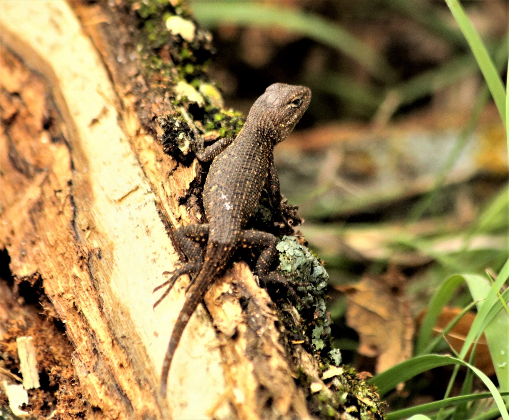

How do scientists tell the difference between what they see and what they think it means?
Keep this question in mind as you work through the lesson today.
1tell the difference between an observation and an inference.
2support an idea with evidence from what I observed.
3write a testable question about something I notice.
A camel can drink 30 gallons of water in 10 minutes and then go for weeks without drinking again. Hummingbirds beat their wings 80 times per second. Some frogs freeze almost solid in winter — and then come back to life in spring.
Every living thing has special features that help it survive where it lives. We call these features ADAPTATIONS. Some are built into the body (like fur or claws). Some are things the animal does (like migrating). Some are patterns of the life cycle itself (like caterpillars turning into butterflies). Today we look at all three.
Write your prediction below. Use at least two sentences. Pick an organism. What's one adaptation it has? How do you think it got that adaptation?
These six words are tools you'll use all year. Tap each card to flip it and read the definition. You'll use most of them in your investigation today.
Copy this sentence carefully into your science notebook:
"Adaptations help organisms survive. They can be physical, behavioral, or life-cycle features."
Then give one example of each type.

A physical adaptation is a body part that helps an organism survive. Thick fur for cold places. Sharp claws for catching prey. Wide flat teeth for grinding plants. Long eyelashes to keep out sand. Big ears to release heat. Camouflage colors to hide.
Physical adaptations match the environment. Animals in cold places have thick fur. Animals in deserts have ways to save water. Animals in trees have grippy fingers or claws. Each body part is designed for a job — and that job helps the organism stay alive.
EvidenceevidenceObservations or data that support or test an idea. is what scientists use to back up their ideas. The more careful your observations, the stronger your evidence becomes. A scientist doesn't say, "I think the leaves are turning yellow." They write down the dates, the colors, and the counts — so anyone could check.
When you base an idea on evidence, you can defend it. When you base it on a guess, someone can easily push back. That's why a scientist's notebook is full of numbers, dates, sketches, and careful words. Each one becomes evidence later.
Scientists don't ask just any question — they ask testable questionstestable questionA question you can answer by observing, measuring, or testing.. "Why are clouds beautiful?" isn't testable. But "Do clouds form more often in the morning or the afternoon?" — that's something you could actually find out by watching the sky for a week.
Real-World Connection: Adaptations are why we have such an amazing variety of life on Earth. From bacteria living in volcanic vents to penguins thriving in Antarctica to camels surviving Saharan deserts — each species is finely tuned to its environment through millions of years of variation and survival pressure.
Adaptations are features that help organisms survive in their environments. Three main kinds: PHYSICAL (body parts), BEHAVIORAL (actions/habits), and LIFE-CYCLE (special life stages). Each kind works together to keep organisms alive.
Six adaptations from real organisms. Each is one of three types (physical, behavioral, or life-cycle). Tap each to learn how it helps the organism survive.
Tap each box to see why scientists keep observations and inferences apart.
Go Deeper — Why scientists still use paper notebooks
You'd think modern scientists would type everything on a computer. Many do — eventually. But field notebooks are still mostly paper. Why? They don't run out of battery. They survive rain (especially the waterproof kind). And they're easy to flip through years later.
If you visited a research station today, you'd probably find shelves full of yellow waterproof notebooks. Some are 30 or 40 years old, still being checked when scientists need to compare today's data to data from a long time ago.
A 5th grader named Sam was watching a small lizard on a sidewalk. Sam wrote six things in his notebook. Some are observations. Some are inferences. Your job is to sort them out — and notice why it matters.

Read Sam's notebook
Read each of Sam's six notes below. For each one, decide if it is an observation or an inference. Don't rush — look closely at the words Sam chose.
| # | What Sam wrote | Observation or Inference? |
|---|---|---|
| 1 | "The lizard is brown with darker stripes on its back." | |
| 2 | "It must be hot, because the lizard is staying still." | |
| 3 | "It is about 4 inches long, from nose to tail." | |
| 4 | "The lizard is scared of me." | |
| 5 | "It blinked twice in ten seconds." | |
| 6 | "It probably eats bugs from the garden." |
Look for the pattern
Look at the notes you marked as observations. What do they have in common? Now look at the inferences. What words tip you off — words like "must," "probably," or "because"?
Turn one inference into a testable question
Pick one of Sam's inferences. Rewrite it as a testable question — one a person could answer by watching, measuring, or testing. Example: "Do lizards stay still when it gets hotter?"
Make a claim
Based on what you noticed, write a one-sentence claim about why scientists keep observations and inferences in separate columns. You'll use this idea in your CER later.
Answer these in complete sentences. Use the notebook table you just filled in.
Think about these. Be ready to explain your reasoning out loud or in your notebook.
📐 Part A — Model the Difference
Add "Lesson 22.01 — Adaptations" to your notebook. Open to a clean page.
📊 Part B — Evidence Questions
Answer in complete sentences using Sam's notebook from the Investigate tab.
✍️ Part C — Claim · Evidence · Reasoning
Write your scientific explanation using Claim, Evidence, and Reasoning. Aim for 4–6 sentences total.
📋 ADDRESS THIS CLAIM: "Adaptations are only body parts — actions and life cycles don't count." Use evidence from the lesson to correct this misconception. No starter.
Your claim📋 List at least two examples from the lesson that prove the claim wrong. No starter.
Your evidence📋 Explain why your examples disprove the claim. No starter.
Your reasoningWrite 3–4 sentences answering these:
- What did you predict at the start? Was it accurate?
- What from the lesson changed or confirmed your thinking?
- How is your final explanation more complete than your first prediction?